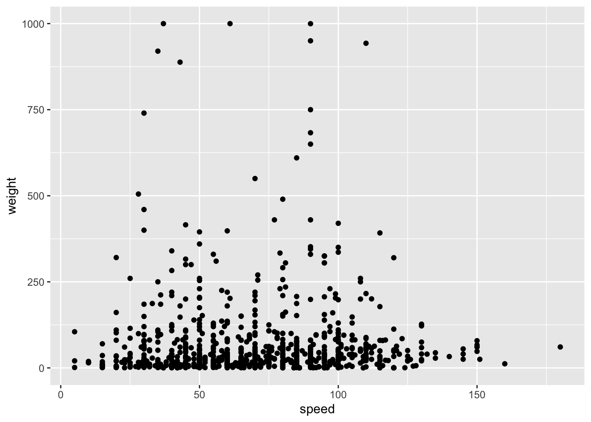
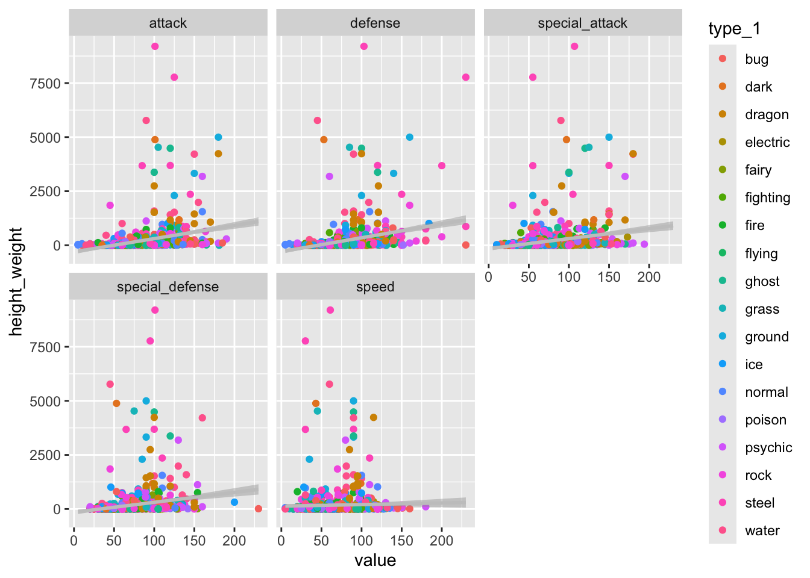

── Attaching core tidyverse packages ──────────────────────── tidyverse 2.0.0 ──
✔ dplyr 1.1.4 ✔ readr 2.1.5
✔ forcats 1.0.0 ✔ stringr 1.5.1
✔ ggplot2 3.5.2 ✔ tibble 3.2.1
✔ lubridate 1.9.4 ✔ tidyr 1.3.1
✔ purrr 1.0.4
── Conflicts ────────────────────────────────────────── tidyverse_conflicts() ──
✖ dplyr::filter() masks stats::filter()
✖ dplyr::lag() masks stats::lag()
ℹ Use the conflicted package (<http://conflicted.r-lib.org/>) to force all conflicts to become errors
library(ggiraph)library(viridis)
Loading required package: viridisLite
library(ggpmisc)
Loading required package: ggpp
Registered S3 methods overwritten by 'ggpp':
method from
heightDetails.titleGrob ggplot2
widthDetails.titleGrob ggplot2
Attaching package: 'ggpp'
The following object is masked from 'package:ggplot2':
annotate
Rows: 949 Columns: 22
── Column specification ────────────────────────────────────────────────────────
Delimiter: ","
chr (10): pokemon, type_1, type_2, color_1, color_2, color_f, egg_group_1, e...
dbl (12): id, species_id, height, weight, base_experience, hp, attack, defen...
ℹ Use `spec()` to retrieve the full column specification for this data.
ℹ Specify the column types or set `show_col_types = FALSE` to quiet this message.
Data Exploration Ideas:
Does height and or height influence HP - can maybe do some simple stats here for practicing (titles: is bigger actually better?; good things come in small packages)
Can maybe have one overall all pokemon one and then plots separate by type?
Plot speed, height, weight and see if they are visually correlated
If infographic could be fun to have a largest and smallest pokemon with icons or photos
Ggirafe plot with pokemon number on x and then type on y and when you are close to one type group they all get highlighted - obviosuly not if static
Would be interesting to see how it changes over time, can add in vertical line in between ID numbers where new releases happened
maybe do some linear model
ggplot(pokemon_df) +geom_point(aes(x = height, y = weight))
ggplot(pokemon_df) +geom_point(aes(x = speed, y = weight))

ggplot(pokemon_df) +geom_point(aes(x = speed, y = height))
ggplot(pokemon_df) +geom_boxplot(aes(x = speed, y = type_1))
ggplot(pokemon_df) +geom_point(aes(y = type_1, x = base_experience))+geom_boxplot(aes(y = type_1, x = base_experience))
ggplot(pokemon_df) +geom_point(aes(y = type_1, x = hp))+geom_boxplot(aes(y = type_1, x = hp))
use ggirafe to see which ones are the outliers, low and high ends
With this plot I could so some writing too. “There are 949 total Pokemon. Each has a primary type, but only 53.7% of them have a secondary type as well.
Let’s look at how hp of pokemons has changed over time
pokemon_gens <- pokemon_df %>%mutate(generation =case_when(id >=1& id <=151~"generation 1", id >=152& id <=251~"generation 2", id >=252& id <=386~"generation 3", id >=387& id <=493~"generation 4", id >=494& id <=649~"generation 5", id >=650& id <=721~"generation 6", id >=722& id <=809~"generation 7", id >=810& id <=905~"generation 8", id >=906& id <=1025~"generation 9", T ~NA)) %>%filter(!is.na(generation)) %>%mutate() ## calculate the mean of each generation group and then plot that as a line over itggplot(pokemon_gens) +geom_point(aes(x = id, y = hp, color = generation)) +geom_boxplot(aes(x = id, y = hp, color = generation))
Multiple linear regression models for attack, defense, and speed
fit_attack <-lm(attack ~ height + weight, data = pokemon_df)summary(fit_attack)
Call:
lm(formula = attack ~ height + weight, data = pokemon_df)
Residuals:
Min 1Q Median 3Q Max
-109.921 -18.661 -2.354 16.638 112.308
Coefficients:
Estimate Std. Error t value Pr(>|t|)
(Intercept) 66.37593 1.28203 51.774 < 2e-16 ***
height 7.70321 0.95970 8.027 2.96e-15 ***
weight 0.05489 0.01014 5.412 7.90e-08 ***
---
Signif. codes: 0 '***' 0.001 '**' 0.01 '*' 0.05 '.' 0.1 ' ' 1
Residual standard error: 28.27 on 946 degrees of freedom
Multiple R-squared: 0.2186, Adjusted R-squared: 0.217
F-statistic: 132.4 on 2 and 946 DF, p-value: < 2.2e-16
fit_defense <-lm(defense ~ height + weight, data = pokemon_df)summary(fit_defense)
Call:
lm(formula = defense ~ height + weight, data = pokemon_df)
Residuals:
Min 1Q Median 3Q Max
-111.653 -18.638 -4.418 14.631 162.129
Coefficients:
Estimate Std. Error t value Pr(>|t|)
(Intercept) 64.151080 1.240570 51.711 < 2e-16 ***
height 2.959743 0.928667 3.187 0.00148 **
weight 0.094846 0.009815 9.663 < 2e-16 ***
---
Signif. codes: 0 '***' 0.001 '**' 0.01 '*' 0.05 '.' 0.1 ' ' 1
Residual standard error: 27.35 on 946 degrees of freedom
Multiple R-squared: 0.2109, Adjusted R-squared: 0.2092
F-statistic: 126.4 on 2 and 946 DF, p-value: < 2.2e-16
fit_speed <-lm(speed ~ height + weight, data = pokemon_df)summary(fit_speed)
Call:
lm(formula = speed ~ height + weight, data = pokemon_df)
Residuals:
Min 1Q Median 3Q Max
-75.312 -21.803 -2.419 21.789 108.344
Coefficients:
Estimate Std. Error t value Pr(>|t|)
(Intercept) 64.44413 1.30555 49.362 < 2e-16 ***
height 5.25548 0.97731 5.377 9.52e-08 ***
weight -0.02833 0.01033 -2.743 0.00621 **
---
Signif. codes: 0 '***' 0.001 '**' 0.01 '*' 0.05 '.' 0.1 ' ' 1
Residual standard error: 28.79 on 946 degrees of freedom
Multiple R-squared: 0.03074, Adjusted R-squared: 0.02869
F-statistic: 15 on 2 and 946 DF, p-value: 3.858e-07
pokemon_hw <- pokemon_df %>%mutate(height_weight = height*weight) %>%pivot_longer(cols=10:14) %>%rename(attribute = name)ggplot(pokemon_hw) +geom_point(aes(x = value, y = height_weight, color = type_1)) +#scale_color_viridis() +facet_wrap(vars(attribute)) +geom_smooth(aes(x = value, y = height_weight), method=lm,se=TRUE,fullrange=TRUE, color ="gray78")
`geom_smooth()` using formula = 'y ~ x'

Might be fun to pull out the biggest one (height and weight) that has the lowest score, bigest with the highest score, and then same for the small one. Have their icons arranged in a way that shows them next to each other.
Does the level of the attribute affect the HP? Which one is the most important?
## HP vs attributesggplot(pokemon_hw) +geom_point(aes(x = value, y = hp, color = type_1)) +#scale_color_viridis() +facet_wrap(vars(attribute)) +geom_smooth(aes(x = value, y = hp), method=lm,se=TRUE,fullrange=TRUE, color ="gray78")
`geom_smooth()` using formula = 'y ~ x'
ggplot(pokemon_hw) +geom_point(aes(x = hp, y = value, color = type_1)) +#scale_color_viridis() +facet_wrap(vars(attribute)) +geom_smooth(aes(x = hp, y = value), method=lm,se=TRUE,fullrange=TRUE, color ="gray78")
`geom_smooth()` using formula = 'y ~ x'
## does type affect HP?ggplot(pokemon_hw) +geom_point(aes(x = hp, y = value, color = attribute)) +#scale_color_viridis() +facet_wrap(vars(type_1))
Think of the story - figure out if there are any that would be cool to pull our and highlight, maybe the ones that were
`summarise()` has grouped output by 'type_1'. You can override using the
`.groups` argument.
ggplot(cols_types) +geom_bar(aes(x = ty_co_combo, y = type_1, fill = color_1), stat ="identity", position="fill") +scale_fill_identity() +theme_minimal()
#c("fighting", "fire", "electric", )
Maybe spend some time to organize these in rainbow order :) - maybe use the colors for the pokemon type in other plots